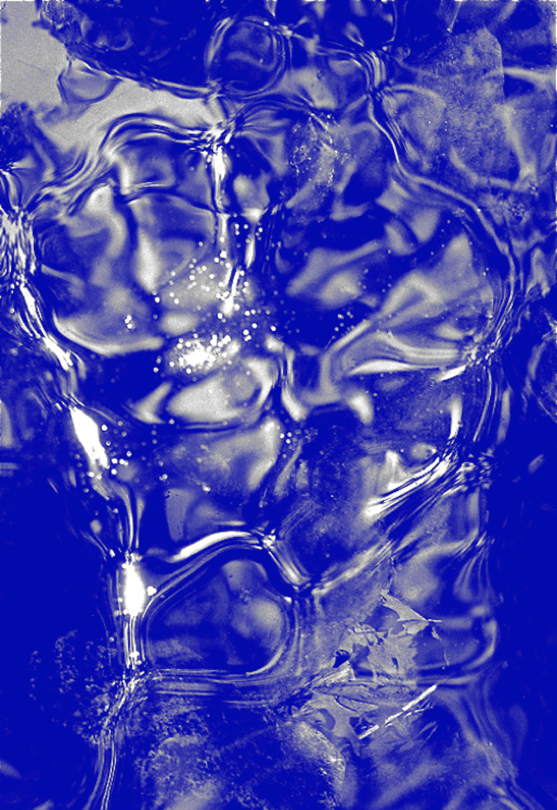

If you turn on a tap very gently and wait a few seconds for
the flow to settle down, you can usually produce a regular
series of drops of water, falling at equally spaced times in a
regular rhythm. It would be hard to find anything more predictable
than this. But if you slowly turn the tap to increase
the flow, you can set it so that the sequence of drops falls in a
very irregular manner, one that sounds random. It may take a
little experimentation to succeed, and it helps if the tap turns
smoothly. Don't turn it so far that the water falls in an unbroken
stream; what you want is a medium-fast trickle. If you get
it set just right, you can listen for many minutes without any
obvious pattern becoming apparent.
In 1978, a bunch of iconoclastic young graduate students
at the University of California at Santa Cruz formed the
Dynamical Systems Collective. When they began thinking
about this water-drop system, they realized that it's not as
random as it appears to be. They recorded the dripping noises
with a microphone and analyzed the sequence of intervals
between each drop and the next. What they found was shortterm
predictability. If I tell you the timing of three successive
drops, then you can predict when the next drop will fall. For
example, if the last three intervals between drops have been
0.63 seconds, 1.17 seconds, and 0.44 seconds, then you can be
sure that the next drop will fall after a further 0.82 seconds.
(These numbers are for illustrative purposes only.) In fact, if
you know the timing of the first three drops exactly, then you
can predict the entire future of the system.
nature's numbers by ian stewart
